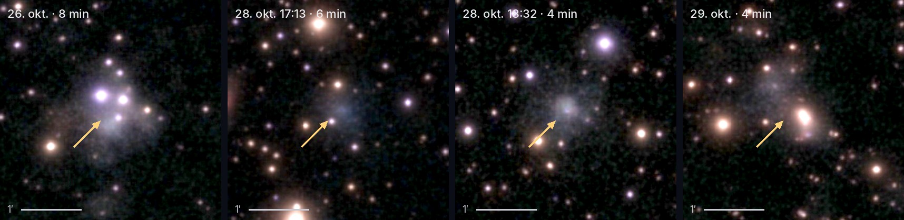
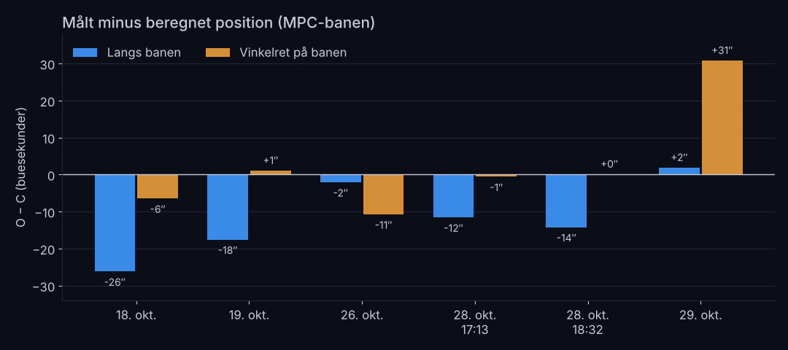
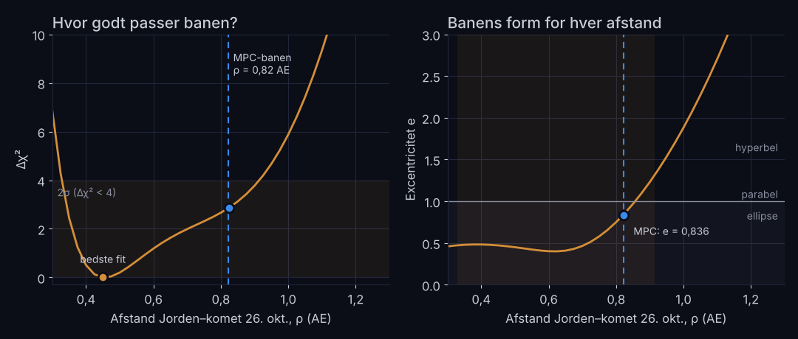
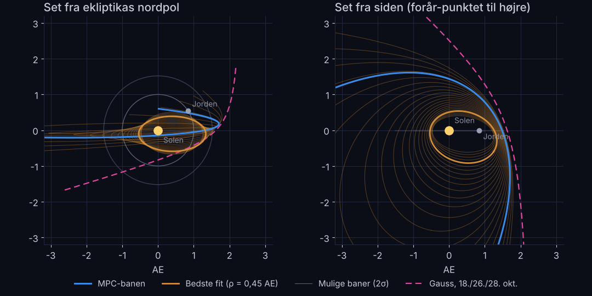

Hovedresultaterne
Seks eVscope2-billeder fra 18. til 29. oktober 2026 giver kometens position på himlen med en pladeløsning på 0,6–1,4″. Gauss’ metode på tre af nætterne giver en hyperbel. En mindste kvadraters tilpasning med Keplers ligning på alle seks nætter viser, at målingerne passer med en hel familie af baner: afstanden til kometen er kun bestemt inden for 0,33–0,91 AE.
Hvis man fastholder afstanden den 26. oktober på MPC-banens værdi, 0,825 AE, finder tilpasningen q = 1,272 AE, e = 0,853 og i = 96,1°. Det er næsten MPC-banen (q = 1,265, e = 0,836, i = 95,8°). Målingerne er altså forenelige med den sande bane, men de kan ikke selv udpege den. Det kræver en længere bue eller præcise tidsstempler.
Seks positioner på elleve dage
De tre første nætter er beskrevet i den første baneberegning. Nu er der kommet tre aftener til: 26., 28. (to stakke med 80 minutters mellemrum) og 29. oktober. Alle billeder er eVscope2-stakke fra Djursland (56,5° N, 10,8° Ø), gemt som appens 2800 × 2800 pixel eksport. Tiden i filnavnet regnes som slutningen af stakken, så midttiden er filnavnet minus den halve integrationstid.
| Nat 2026 | Midttid (UTC) | Stak | RA (J2000) | Dec (J2000) | Stjerner | rms |
|---|---|---|---|---|---|---|
| 18. okt. | 17:56:43 | 7 min | 20h 47m 30,57s | +8° 28′ 10,1″ | 25 | 1,0″ |
| 19. okt. | 19:09:06 | 6 min | 20h 41m 40,79s | +9° 02′ 05,5″ | 25 | 1,4″ |
| 26. okt. | 18:11:07 | 8 min | 20h 11m 02,61s | +12° 03′ 58,5″ | 29 | 1,1″ |
| 28. okt. | 17:12:52 | 6 min | 20h 04m 26,59s | +12° 44′ 20,5″ | 42 | 0,6″ |
| 28. okt. | 18:32:04 | 4 min | 20h 04m 16,08s | +12° 45′ 23,3″ | 35 | 0,6″ |
| 29. okt. | 19:34:36 | 4 min | 20h 01m 00,99s | +13° 05′ 21,2″ | 39 | 0,8″ |

Komaen er diffus, cirka 35–50″ bred (FWHM), uden en tydelig kerne. Stjerner i feltet maskeres, og en elliptisk 2D-gaussfunktion med baggrund tilpasses det, der er tilbage. Den 26. oktober ligger fire stjerner i komaen, og den 29. oktober en klar stjerne. De to nætter får derfor lavere vægt i baneberegningen.
Målt mod beregnet: O − C
Positionerne er sammenlignet med en topocentrisk efemeride fra MPC-banen (MPEC 2026-TP0) med lystidskorrektion. Forskellen er delt i en del langs kometens bevægelse og en del vinkelret på den.

- Vinkelret på banen er afvigelsen 0–6″ på de fire rene nætter. Det svarer til pladeløsningens nøjagtighed og viser, at astrometrien holder.
- Langs banen halter kometen 12–26″ efter. Med en fart på 3,2–4,2″ pr. minut svarer det til, at stakkenes reelle midttid ligger 3–6 minutter tidligere end antaget. Det er tidsstemplet, ikke målingen, der er usikkert.
- Den 26. og 29. oktober er der 11″ og 31″ vinkelret på banen. Det er stjernerne i komaen, der trækker centrum.
Gauss’ metode
Gauss bruger tre retninger L̂i og observatørens heliocentriske position Ri. Afstanden r2 fra Solen ved den midterste observation er rod i ottendegradsligningen
Derefter forfines Lagranges f- og g-funktioner med universelle variable og lystidskorrektion, indtil afstandene står stille. Med MPC-banens egne retninger for 18., 26. og 28. oktober genfinder koden MPC-banen på alle decimaler. Her viste der sig en finesse: ottendegradsligningen har da ingen reel rod tæt på løsningen, men et næsten dobbelt par komplekse rødder (1,258 ± 0,032i). Realdelen er en god startværdi, og f,g-iterationen gør resten.
Med de målte retninger giver Gauss ρ2 = 1,08 AE og en hyperbel med e = 2,49. Med 29. oktober som sidste nat bliver det e = 3,3. Grunden er, at kometens spor næsten er en storcirkel: over de ti dage krummer det kun cirka 100″ væk fra den. Et par buesekunders fejl i krumningen flytter derfor afstanden meget.
Keplers ligning og mindste kvadrater
I stedet for tre nætter bruges alle seks. En prøvebane føres frem og tilbage i tid med Keplers ligning,
(for en hyperbel e sinh F − F = M), og de seks baneelementer justeres, til summen af de vægtede kvadrerede afvigelser χ² er mindst. Vægtene afspejler det, O − C viste: 3″ vinkelret på banen, men langs banen også en tidsusikkerhed på 3 minutter,
og 8″ og 15″ på de to nætter med stjerner i komaen. Uden den vægtning ender tilpasningen i en hyperbel med e ≈ 1,8, uanset om den startes fra Gauss-løsningen, fra MPC-banen eller fra tilfældige baner.
For at se, hvad dataene faktisk bestemmer, fastholdes afstanden ρ den 26. oktober, og resten tilpasses. Så fås én bane for hver afstand og en kurve over Δχ² (figur 3).

Det bedste fit ligger ved ρ = 0,45 AE, men kurven er flad: alt fra 0,33 til 0,91 AE ligger inden for 2σ, og banens form spænder fra en kort ellipse over MPC’s lange ellipse til en hyperbel. Ved MPC’s afstand er tilpasningen næsten MPC-banen.
| Størrelse | Bedste fit | Ved ρ = 0,825 AE | Gauss (3 nætter) | MPC |
|---|---|---|---|---|
| Afstand Jord–komet 26. okt., ρ (AE) | 0,450 | 0,825 | 1,078 | 0,822 |
| Fart om Solen 26. okt. (km/s) | 25,7 | 34,9 | – | 34,8 |
| Perihelafstand q (AE) | 0,509 | 1,272 | 1,523 | 1,265 |
| Excentricitet e | 0,472 | 0,853 | 2,489 (hyperbel) | 0,836 |
| Inklination i | 55,8° | 96,1° | 108,4° | 95,8° |
| Opstigende knude Ω | 4,3° | 1,5° | 0,1° | 1,5° |
| Perihelargument ω | 149,4° | 46,1° | 24,0° | 47,1° |
| Periheltid T | 16. jan. 2027 | 26. nov. 2026 | 27. okt. 2026 | 27. nov. 2026 |
| Omløbstid P = a3/2 (år) | 0,95 | 25,5 | – | 21,5 |
Bedste fit og familien ved ρ = 0,825 AE er fra den vægtede Kepler-tilpasning af alle seks nætter. MPC-elementerne er fra MPEC 2026-TP0, epoke 23. oktober 2026.
Banefamilien i 3D
Figur 4 viser de mulige baner set ovenfra og fra siden. Alle går gennem det samme stykke af himlen set fra Jorden, men de svinger vidt forskelligt ud i rummet. Den interaktive model nedenfor gør det samme i 3D: træk i afstandsskyderen, og se banen ændre sig, mens sigtelinjerne fra Jorden bliver liggende.


Banens plan er bestemt, formen er ikke
Elleve dage med eVscope2 er nok til at måle kometens vej på himlen med få buesekunders nøjagtighed og til at vise, at den sande bane passer med målingerne. Afstanden, og dermed om banen er en kort ellipse, en lang ellipse eller en hyperbel, kræver mere.
- Fortsæt i november. Kl. 18 dansk tid står kometen cirka 45° over horisonten i sydsydvest: 5. november ved RA 19h 43m, Dec +15,0°; 10. november ved 19h 35m, +16,1°; 15. november ved 19h 28m, +17,2°. En bue på 3–4 uger gør dalen i figur 3 meget smallere.
- Hent rå data fra appen (manifest.json med obs_start og obs_end). Så kendes stakkens midttid på sekunder, og usikkerheden på 10–13″ langs banen forsvinder.
- Undgå stjerner i komaen, eller tag to stakke med en halv times mellemrum, så kometen er flyttet væk fra dem.